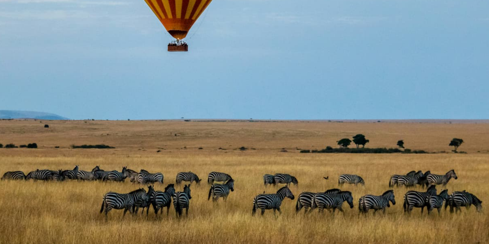
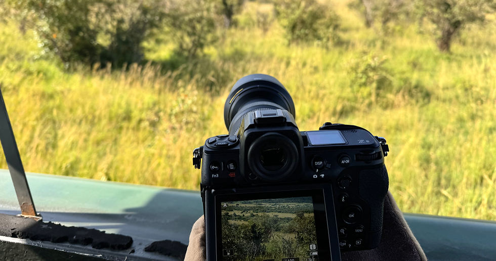
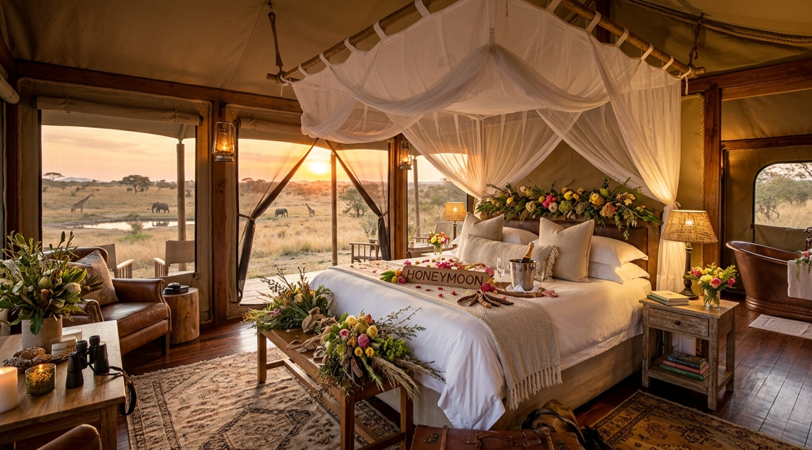

MASAI MARA SAFARI BOOKINGS
Premium Wild Kenya Expeditions & Luxury Game Drives
Review our custom itineraries below. Each option follows a structured breakdown detailing the overview, occupancy pricing matrix tables, and daily schedules.
A fast-paced, high-value weekend bush package designed specifically for business travelers or tourists with limited time who want a direct overview introduction to the savanna wildlife zones.


Board our custom open-roof 4x4 cruiser directly from Nairobi. Travel past the Rift Valley viewpoint to the park for local lodge check-in, followed by an evening wildlife tracking sweep for lions and cheetahs.
Track active savanna predators at first light during the coolest hours. Return for a heavy breakfast spread before checking out to board your return transit back to Nairobi by evening.
Our flagship traditional wilderness exploration package. This balanced itinerary offers ample time to venture deeper into the game reserve borders, search extensively for the full Big Five list, and experience an authentic Maasai community cultural tour.
Depart from the capital city hub, cruising past Narok town directly to your luxury tented campground site. Settle into your canvas suite and gather for a briefing and fresh local welcome drinks over sunset views.
An exhaustive 8-hour game drive tracing high-density wildlife ranges. Break for a catered picnic lunch box arrangement under a wild acacia shade boundary close to active migration crocodile river pools.

Immerse yourself in centuries-old cultural heritage, interacting directly with local Maasai community warriors at an authentic village manyatta. Board your vehicle for the outbound drive back to Nairobi.
The ultimate all-inclusive premium African bush adventure. Curated specifically for wildlife enthusiasts seeking high-end hospitality, this package features a flying balloon safari, champagne bush breakfast, and top-tier five-star camp stays.
Board a luxury light aircraft from Wilson Airport directly to the Masai Mara airstrip. Our private cruiser guides will transfer you to a 5-star tented camp for premium welcome drinks, massage therapies, and an introductory evening tracking loop.

Wake up at 05:00 AM for a majestic sunrise hot air balloon flight floating silently over the Great Migration herds. Celebrate landing with a traditional chef-catered champagne bush breakfast layout right on the savanna plains before heading out on a midday elephant tracking sweep.
Spend a complete 9-hour day deep inside the reserve tracking high-density leopard and rhino territories. Your guide will position the custom cruiser along the Mara River banks to watch for active wildebeest river crossings.
Explore a restricted private conservatory zone for rare nocturnal species tracking loops. Spend the afternoon sitting with local elder Maasai warriors, participating in ancient cultural heritage dances, and testing traditional archery equipment.
Capture final close-range wildlife photographs during a brief early morning tracking circuit. Savor a farewell lunch at the campground lodge before your private transport cruiser drops you at the airstrip for your flight back to Nairobi.
A specialized, slowly paced tour tailored explicitly for content creators and wildlife photographers. Heavy focus is placed on positioning custom lens rigs and stabilizing mounts during premium golden hour tracking windows.

Travel out from Nairobi in a cruiser outfitted with custom heavy beanbag mounts and stabilizing platforms. Arrive at camp by midday to unpack camera equipment and head out on a lighting field drive to test focus tracking angles on local zebras.
Depart camp early at 05:45 AM to utilize premium cold morning fog light windows for crisp predatory cheetah and lion action shots. Spend mid-afternoon in our camp editing lounge before heading back out for low-angle sunset silhouette frames.
Spend the entire day stationed inside a specialized camera-hide perimeter or parked at long-lens distance points monitoring herd movement dynamics. Capture high-speed close-ups of crocodiles and dramatic river crossings.
Take an early morning guided macro walking safari tracking small birds, unique colorful insects, and plants. Return to the lodge for a closing brunch layout before packing up your camera gear boxes for the return transit back to Nairobi.
A premium, highly secluded romantic getaway package. Pairs private custom vehicle tracking loops with boutique, high-end camp hospitality for an unforgettable celebration in the wild savanna.

Depart Nairobi in a completely private cruiser reserved exclusively for two. Arrive at a luxury boutique eco-camp to find a honeymoon suite decorated with fresh savanna flora. Embark on a sunset drive paired with a private hilltop champagne toast.
Enjoy a flexible, self-paced day-long safari drive tracking elegant giraffes and leopards. Return to camp for couples' spa treatments before being escorted to a private, secure clearing for a romantic candlelit multi-course fine-dining dinner under the stars.
Savor a luxurious private breakfast served right on your suite's wooden deck overlooking a wildlife watering hole. Take one last short morning tracking loop before checking out and heading back along the Rift Valley highway to Nairobi.